Learning outcomes
By the end of Chapter 13 you should be able to do each of these. The tag shows where it is covered.
- 13Explain the defining characteristic of a desert and distinguish between the three broad categories of deserts.
- 13.1Explain how geographic features, latitude, atmospheric circulation, and the Coriolis effect influence where deserts are located.
- 13.2List the primary desert weathering and erosion processes.
- 13.3Identify desert landforms.
- 13.3Explain how desert landforms are formed by erosion and deposition.
- 13.3.1Describe the main types of sand dunes and the conditions that form them.
- 13.4Identify the main features of the Basin and Range desert (United States).
How to use this guide
Underlined words are key terms. Click one, or open Key terms at the bottom right, to read and search every definition from this chapter. The chapter moves from the sky to the ground: why the air is dry where deserts are (13.1), how wind and rare water wear desert rock down (13.2), the landforms and dunes they build (13.3), and North America's own desert of fault-block basins (13.4).

About 30% of Earth's land surface ( surface) is . Deserts are defined by low , not by temperature. They do have extreme temperatures, but because the above them holds little moisture: humidity is low and clouds are scarce. Without cloud cover, the ground absorbs more of the Sun's energy by day and gives off more heat by night.
Deserts are not randomly placed. There are three broad kinds (Table 13.1):
| Kind | Cause | Examples |
|---|---|---|
| Subtropical (latitude) deserts | Dry air sinks at about 30° N and S; deserts lie between about 15° and 30° (13.1.1) | Sahara (Africa), Australian Outback |
| Prevailing winds lose their moisture crossing a mountain range; dry air descends on the far side | Western interior of North America (Great Basin), (Chile), Gobi (Asia) | |
| Cold air too cold to hold much moisture sinks at the poles | Antarctica, large parts of the Arctic |

A forms when wind drives air up and over mountains (Figure 13.3). Air pressure is lower at higher elevation, so the rising air expands and cools. Cool air holds less moisture than warm air, so the moisture falls as rain or snow on the windward side. The now-dry air descends the leeward (downwind) side and leaves an arid region with little precipitation.
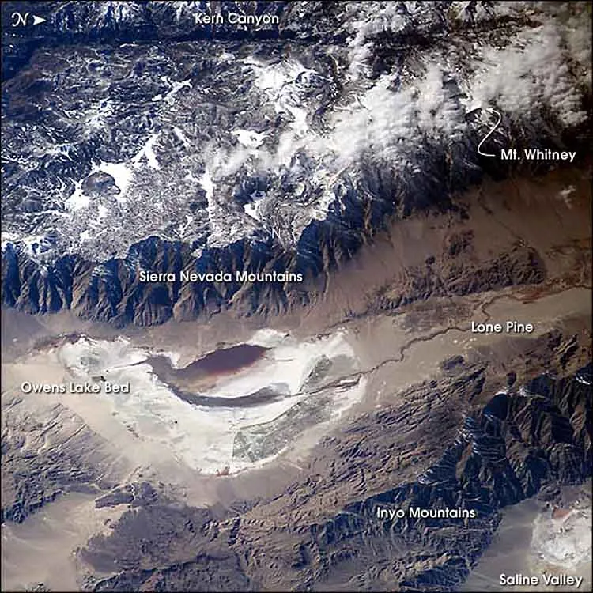
In polar deserts the vast areas of Antarctica and the Arctic are covered with ice and snow, yet their average yearly precipitation is very low. As a result, Antarctica is Earth's driest continent.
13.1The origin of deserts
Geographic location, atmospheric circulation, and Earth's rotation are the main causes of deserts.
13.1.1 Atmospheric circulation
Solar energy turned into heat drives the circulation of air in the atmosphere and of water in the oceans. How strong that circulation is depends on how much energy Earth's surface absorbs, and Earth is heated unevenly, depending on two angles:
- : lines circling Earth parallel to the equator, measured in degrees: 0° at the equator, 90° N and 90° S at the poles.
- : the angle at which a ray of sunlight strikes the surface, measured from the perpendicular. In the tropics both angles are close to 0°, so the surface receives a lot of solar energy; at the poles both approach 90°, and the surface receives little or almost none.
Between the equator and each pole, the air turns over in three cells (Figure 13.5, Table 13.2):
- (over the tropics): the Sun heats the air at the equator and it rises. Rising air cools and drops its moisture as tropical rain. The dried air spreads toward the poles, meets dry air of the Ferrel cell, and the combined dry air sinks back to Earth near 30° latitude.
- , between about 30° and 60°.
- , between about 60° and the pole, where cold dry air sinks.
The sinking dry air makes belts of mostly high pressure at about 30° N and 30° S, called the . So arid zones, where desert conditions dominate, lie between about 15° and 30° north and south of the equator. Air flowing along the ground away from these belts makes the prevailing winds: the toward the equator and the in the temperate zone (13.1.2 explains their directions).
| Cell | Latitudes | Air rises at | Air sinks at | Surface winds |
|---|---|---|---|---|
| Hadley | 0°–30° | Equator (tropical rain) | 30° (horse latitudes; hot deserts) | Trade winds |
| Ferrel (midlatitude) | 30°–60° | 60° | 30° | Westerlies |
| Polar | 60°–90° | 60° | Pole (polar high; polar deserts) | Polar easterlies* |
*The chapter names the trade winds and westerlies only; "polar easterlies" is the standard name used in its NASA circulation figure.
Other deserts owe at least part of their origin to other effects. The , which covers parts of Utah and Nevada, is somewhat affected by sinking air from global circulation, but it is mainly a rain-shadow desert. Moist westerly air from the Pacific rises over the Sierra Nevada and other mountains, cools, and loses its moisture on the upwind side (Figure 13.6).

One of the driest places on Earth is the Atacama Desert of northern Chile, a strip along the coast north of about 30° S, at the southern edge of the trade-wind belt. Three factors combine there:
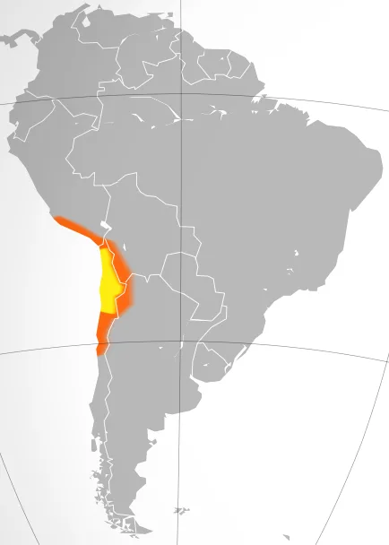
Three factors
- Latitude: it lies in the dry belt of sinking air.
- Rain shadow: trade winds blowing west carry warm, moist air across the Amazon basin. At the Andes the air rises, cools, and drops most of its water as rain; the cool, dry air then descends onto the Atacama, west of the mountains.
- A cold ocean current: onshore winds from the Pacific are cooled by the Peru (Humboldt) Current, and this cold air holds almost no moisture.
Some places in the Atacama have recorded no precipitation for several years. It is the driest non-polar place on Earth.
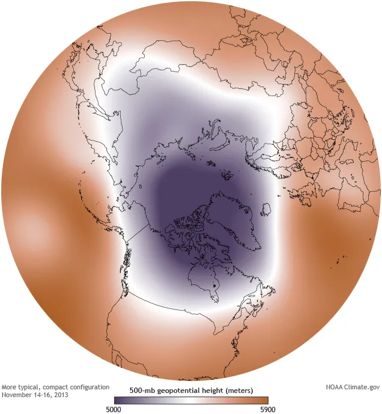
Polar deserts
The polar regions are also belts of mostly high pressure, made by cold dry air sinking in the polar cells. Cold air holds much less moisture than warm air, so sinking polar air makes polar deserts. This is why land near the North and South Poles has always been so dry.
13.1.2 Coriolis effect
Earth rotates toward the east, where the Sun rises. Think of spinning a weight on a string: the weight's speed depends on the length of the string. In the same way, the eastward speed of a point on Earth depends on its distance from Earth's axis of rotation. Higher latitudes are closer to the axis, so they travel eastward more slowly than lower latitudes.
When air or water moves from a lower to a higher latitude, it keeps the momentum it had at the faster latitude, so it moves east faster than the ground beneath it. The reverse happens when it moves toward the equator. This deflection of motion, seen from the rotating Earth, is the (Figure 13.9). A second factor deflects east–west motion: the outward (centrifugal) effect of Earth's spin and gravity, which pulls toward Earth's center, are not in line, and for a mass moving east the result is a net push toward the equator (a mass moving west is pushed toward the pole). The total Coriolis deflection of a mass moving in any direction combines these two factors.
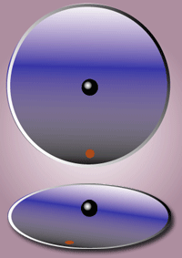
The cells move air north and south relative to the ground, and the Coriolis effect deflects these moving air masses to the right in the Northern Hemisphere and to the left in the Southern Hemisphere (Figure 13.10):
- Trade winds: in the northern Hadley cell, low-altitude air flows south toward the equator and is deflected to the right (west). European sailors used these trade winds to cross the Atlantic to South America and the Caribbean. In the Southern Hemisphere the equatorward air is deflected to the left, so the trade winds blow to the northwest.
- Westerlies: in the northern Ferrel cell, surface air flows from the horse latitudes toward the North Pole and is deflected to the right (east), making the westerlies. In the Southern Hemisphere the poleward air is deflected to the left and flows southeast.
- Polar cells: at 60° N and S, relatively warmer rising air flows poleward, cools, converges at the poles, and sinks in the polar high. This sinking dry air makes the polar deserts, where cold keeps the ice and snow from melting.
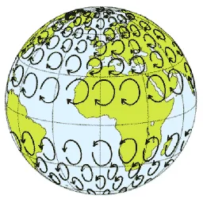
The Coriolis effect acts on all motion on Earth
- Artillery must allow for it in long-distance targeting.
- Ocean turn clockwise in the Northern Hemisphere and counterclockwise in the Southern (Unit 12).
- It helps shape the high-altitude polar jet streams, which sometimes push lobes of cold Arctic air as far as 30° latitude instead of the usual 60°.
- Low-pressure systems and tropical storms spin counterclockwise in the Northern Hemisphere and clockwise in the Southern.
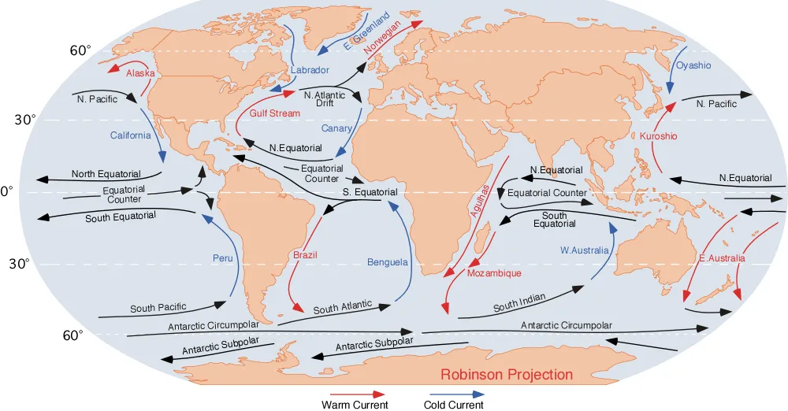
Watch: the chapter's Coriolis effect video ↗ · Check yourself: Section 13.1 quiz in the textbook ↗
13.2Desert weathering and erosion
in deserts works the same way as in other climates (Unit 5), only more slowly. Higher temperatures usually speed up , but water is the main agent of weathering, and the lack of water slows both mechanical and chemical weathering. Low precipitation also means less and less . When rain does fall in the desert it is often heavy and may cause that move a lot of material quickly (13.3).
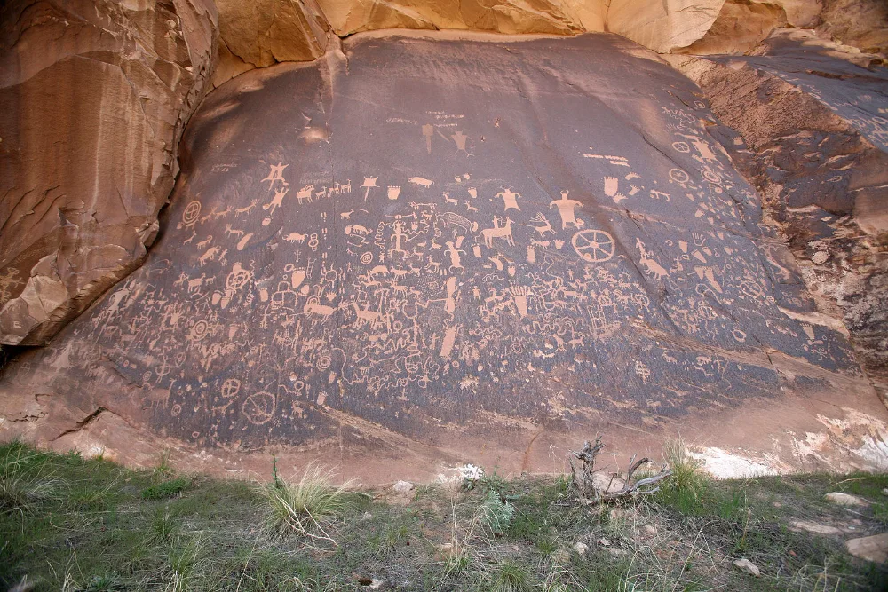
One weathering product is unique to deserts: , also called desert patina or rock rust. It is thin, dark brown layers of clay and iron and manganese that form on very stable rock surfaces in arid environments (Figure 13.13). The chapter says exactly how it forms is still unknown; cosmogenic and biological mechanisms have been proposed (see the fact-check notes).
Wind as an agent of erosion
Water is still the dominant agent of in most deserts, but wind is a notable agent of weathering and erosion in many of them. Wind carries suspended sediment in , the large dust storms common in deserts. Deposits of windblown dust are called . Loess covers wide areas of the midwestern United States; much of it is rock flour that melted out of the of the last (Unit 14), and some was blown from desert regions in the West.

Wind has less energy than water, but it still moves sand, silt, and dust. As with a stream (Unit 11), the load a fluid carries is split into and , and how much goes into each depends on the wind's velocity. Wind moves sediment three ways (Figure 13.15, Table 13.3):
| Process | Grain size | How it moves |
|---|---|---|
| Silt and dust (about 70 µm or smaller) | Lifted high and carried far, as in haboobs; settles as loess | |
| Sand | Grains are lifted, carried a short distance, and drop and splash into the surface, knocking loose other grains, which hop in turn; a cascade up to a meter or so above the ground | |
| Coarser grains | Slide or roll along the surface when the wind is strong enough |
Because saltating grains keep striking one another, windblown sand grains are usually well rounded with frosted surfaces (Figure 13.16). The suspended load is separated from the sand near the ground and carried off as dust, so wind is an effective agent: it separates sand from dust-sized particles (Unit 5).
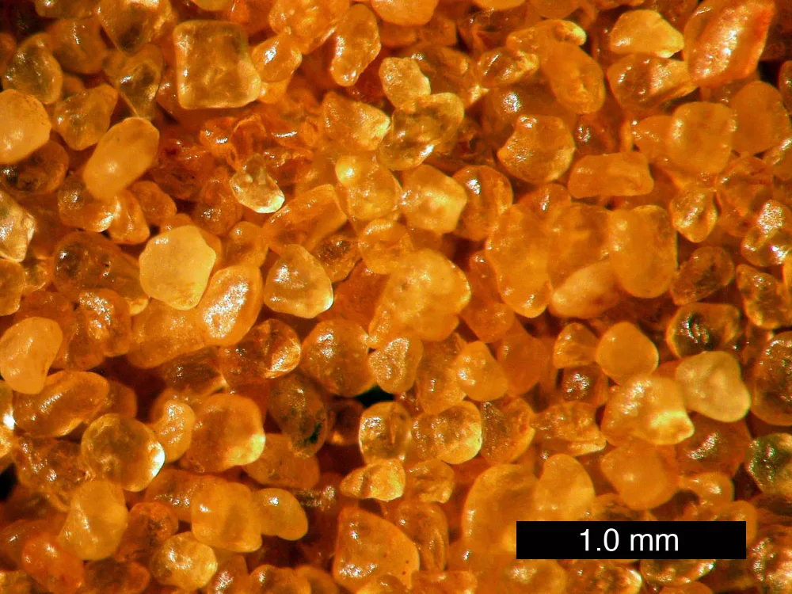
Sliding stones

A solved mystery
(sailing stones, sliding rocks) are large rocks that move across flat desert surfaces, leaving trails. The best known are on Racetrack Playa in Death Valley. For years their movement could not be explained. Recent observational and experimental studies, including measurements of actual motion and lab re-creations, show that the stones are held in thin sheets of ice that the wind pushes across the playa.
Field measurements (Norris and others, 2014) found the ice sheets were moved by light winds; the chapter says "high winds". See the fact-check notes.
Sandblasted landforms
The zone of saltating sand is a powerful erosive agent: bedrock and loose rocks in it are sandblasted (Figure 13.18, Table 13.4).
 VentifactMojave Desert near Barstow, California. Mark A. Wilson, public domain.
VentifactMojave Desert near Barstow, California. Mark A. Wilson, public domain.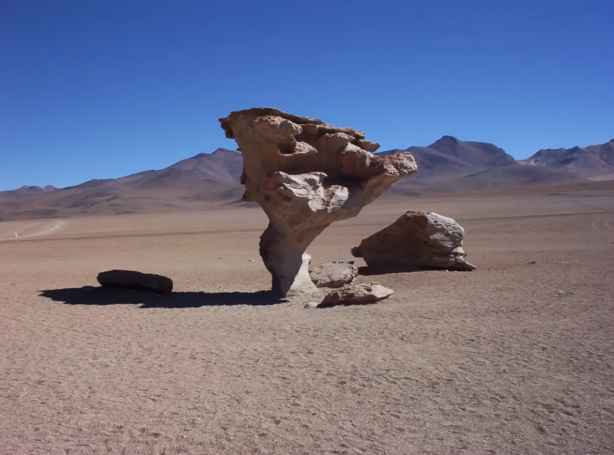
Rock narrowed at its baseNear Salar de Uyuni, Bolivia. Thomas Wilken, CC BY-SA.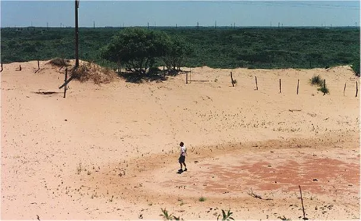
BlowoutTexas. Leaflet, CC BY-SA.
| Feature | What it is | How it forms |
|---|---|---|
| A bedrock outcrop with a sandblasted shape | Abrasion by saltating sand | |
| A rock or boulder on the surface with blasted and polished faces | Sand abrasion; when the main wind direction shifts, several polished faces form | |
| A bowl-shaped depression in sand and silt | Clumps of vegetation anchor sediment; wind removes the unanchored material between them |
Check yourself: Section 13.2 quiz in the textbook ↗
13.3Desert landforms
In the American Southwest, streams leave the mountains and enter the valleys, building a series of landforms (Figure 13.19, Table 13.5):
- : when a stream leaves its narrow canyon, its flow is no longer held in by the canyon walls and spreads out. On the lower slope the water slows and drops its coarser load. As this conglomerate-like material fills the channel, it deflects the stream, so the stream splits into a system of radial distributary channels, much as a river builds a where it enters a body of water. The result is a fan-shaped deposit.
- : alluvial fans keep growing and may join neighboring fans to form an apron of along the mountain front.
- : as the mountains wear away and their sediment piles up, first in fans and then in bajadas, the mountains are eventually buried in their own debris. The remnants that still stick up are inselbergs, "island mountains", first described by the German geologist Wilhelm Bornhardt (1864–1946).
- : where the valley is an enclosed basin, so streams entering it do not drain out, the water leaves only by evaporation and a dry lake bed forms. Playas are among the flattest of all landforms. A playa may cover a large area yet be filled only a few inches deep after a heavy thunderstorm.
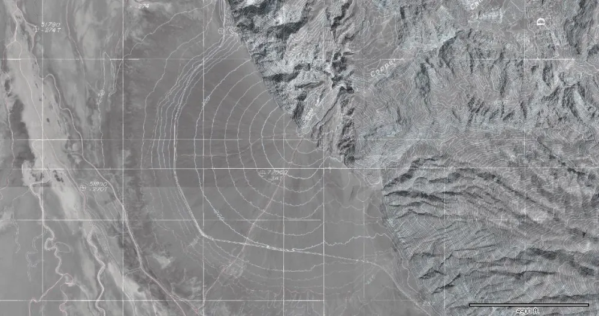
Alluvial fanDeath Valley, California. USGS, public domain. BajadaFrisco Peak, Utah. GerthMichael, CC BY-SA.
BajadaFrisco Peak, Utah. GerthMichael, CC BY-SA.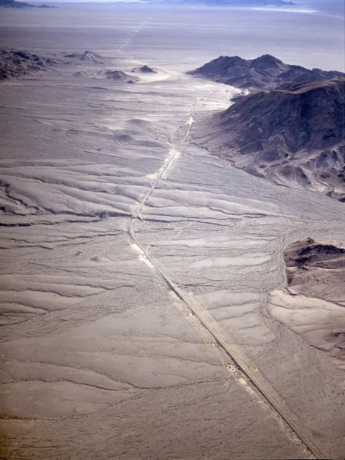
InselbergsMojave Desert, California. USGS, public domain.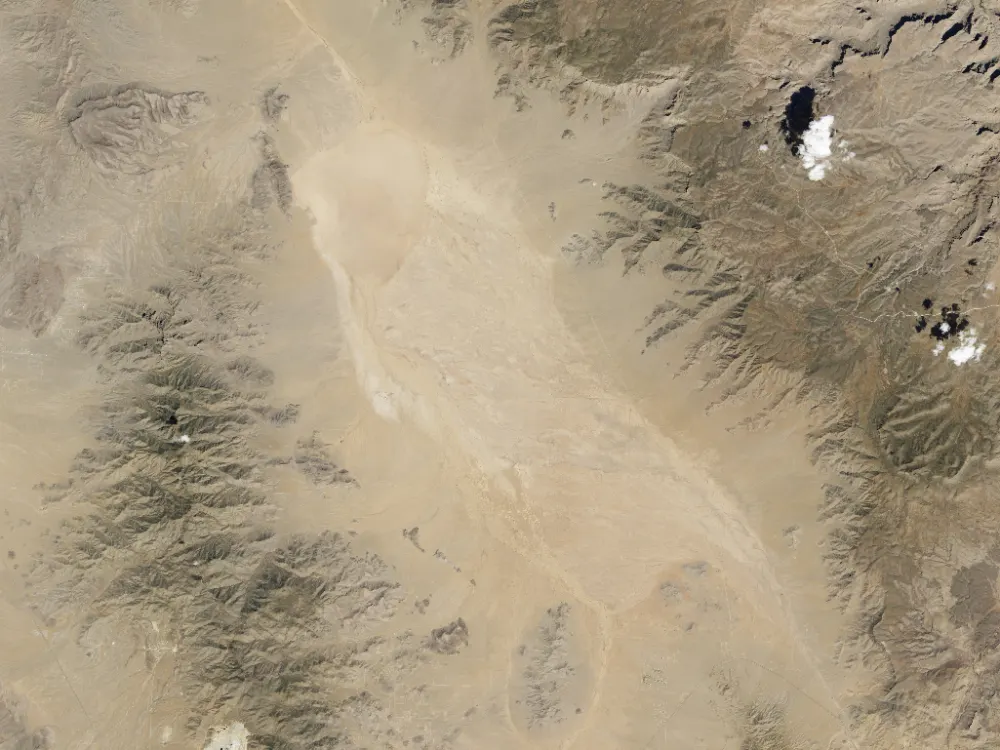
PlayaNear Dolan Springs, Arizona. NASA, public domain.
These landforms record how a desert landscape ages (Figure 13.20): young fault-block mountains with sharp peaks and separate fans at their canyon mouths, then bajadas along the mountain fronts, and finally subdued inselbergs sticking up through a sea of joined bajadas. A trip from the Wasatch Front in Utah southwest to the Pacific passes through all three stages (13.4).
| Landform | Where | How it forms |
|---|---|---|
| Alluvial fan | At a canyon mouth | Stream spreads, slows, drops coarse load; radial distributaries build a fan |
| Bajada | Along a mountain front | Neighboring fans grow and join into an apron of alluvium |
| Inselberg | Rising out of the basin fill | Mountains worn down and buried in their own debris; only remnants stick up |
| Playa | Floor of an enclosed basin | Water that cannot drain out evaporates, leaving a flat dry lake bed |
Ephemeral streams and flash floods
Playa lakes and desert streams that hold water only after rainstorms are called . Because desert thunderstorms are intense, ephemeral drainage can carry a large volume of water in a short time. Desert soils lack the organic matter that helps water soak in. Instead, runoff compacts the ground surface and makes the soil hydrophobic (water-repellent). Because of this hard surface, ephemeral streams can gather water from large areas and fill suddenly from storms many miles away.
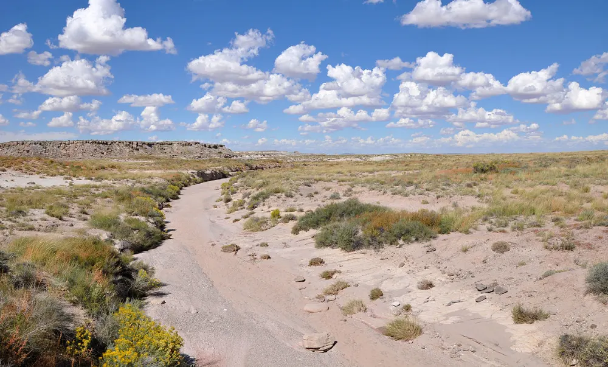
Dry wash (ephemeral stream)Petrified Forest National Park, Arizona. Finetooth, CC BY-SA. Flash flood in a dry washUSGS, public domain.
Flash flood in a dry washUSGS, public domain.
High-volume ephemeral flows, called flash floods, may move as across the land or be channeled through normally dry or canyons. A dry channel can fill quickly with a mass of water and debris that charges down the arroyo and may overflow its banks. Flash floods are a major factor in desert .
Flash flood danger
The storm feeding a flash flood may be miles away, out of sight. People hiking or camping in arroyos that have been bone dry for months, or years, have been swept away by sudden floods.
13.3.1 Sand
The popular picture of a desert is a broad expanse of sand, but geologically deserts are defined by a lack of water. Arid regions that look like a sea of sand are a kind of desert called an (Figure 13.1). An erg is made of fine-grained, loose sand, often blown by wind ( processes) into .
- Best-known erg: the Rub' al Khali ("Empty Quarter") of the Arabian Peninsula.
- In the United States: Great Sand Dunes National Park (Colorado), Little Sahara Recreation Area (Utah), White Sands National Park (New Mexico, a national monument until 2019), and parts of Death Valley National Park (California).
- Ergs are not limited to deserts; they can form wherever there is plenty of sand: as far north as the Athabasca Sand Dunes Provincial Park in Saskatchewan, Canada, and as coastal ergs along lakes and oceans in Oregon, Michigan, and Indiana.
Inside a sand dune is (Figure 13.22). Wind blows up the gentle windward (stoss) side and carries sand to the crest, depositing layers parallel to the stoss side. Sand builds up the crest and pours over the top until the steep leeward (slip) face reaches the , the steepest angle at which the loose sand stays put. Dunes are unstable and move: sand is eroded from the stoss side and keeps falling down the slip face, burying earlier stoss and slip-face layers and making the cross beds. Most are reworked over and over, but sometimes they are preserved in a depression and then lithified. Shifting wind directions and plentiful sand create chaotic cross-bed patterns, like those in Zion National Park, Utah (Figure 13.23).
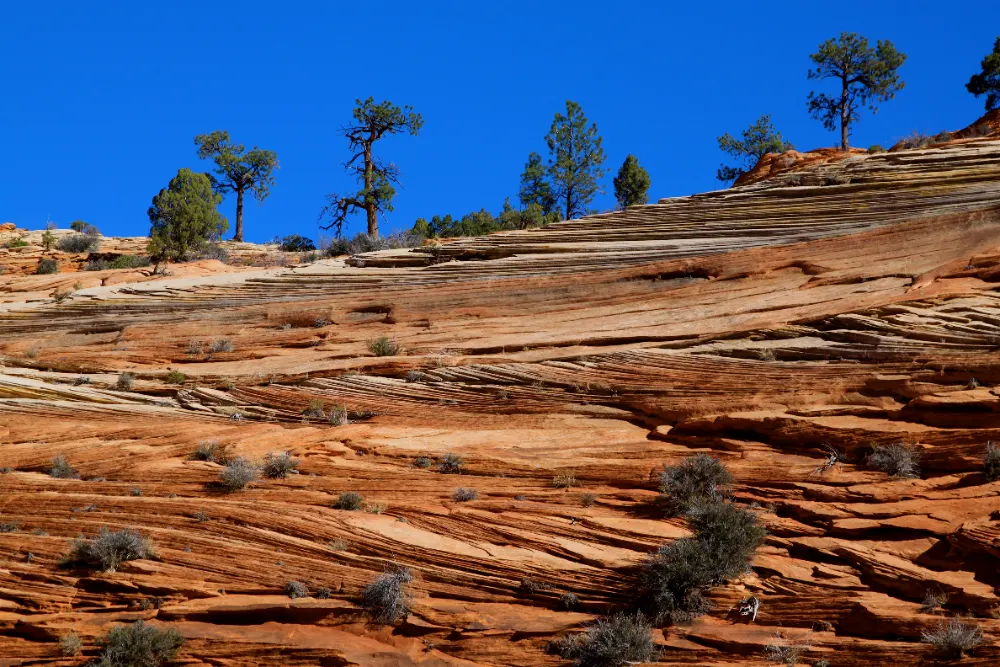
In the Era, Utah was covered by a series of ergs, thickest in southern Utah, which lithified into (Units 5 and 8):
- Navajo Sandstone (): the best known. It forms the dramatic cliffs and spires of Zion National Park and covers a large part of the Colorado Plateau.
- Entrada Sandstone (also Jurassic): a later series of dunes covered the Navajo and lithified. In Arches National Park, erosion of the overlying layers exposed fins of Entrada Sandstone and carved out their weaker parts to form the arches.
Sand can be recycled. As the cement holding the grains together in these sandstone cliffs breaks down, freed grains gather at the base of the cliffs and move down the washes. The Mesozoic ergs may hold quartz sand first weathered from igneous rocks in the early and recycled many times. Coral Pink Sand Dunes State Park in southwestern Utah is an example: its new dunes are made of sand eroded from the Navajo Sandstone (Figure 13.16).
Dune types
Dune shape depends on wind direction, sand supply, and sometimes vegetation that anchors the sand (Figure 13.24, Figure 13.25, Table 13.6).
 Barchan dunesCoastal Brazil. NASA, public domain.
Barchan dunesCoastal Brazil. NASA, public domain.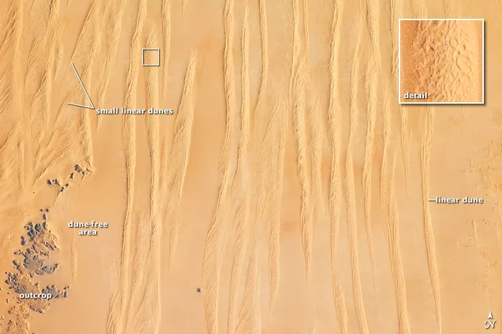
Longitudinal (linear) dunesGreat Sand Sea, Egypt. NASA Earth Observatory, public domain. Parabolic dunesCape Cod, Massachusetts. USGS, public domain.
Parabolic dunesCape Cod, Massachusetts. USGS, public domain. Star duneSahara. USGS, public domain.
Star duneSahara. USGS, public domain.
| Type | Sand supply | Wind | Shape |
|---|---|---|---|
| Limited | Fairly constant direction | Crescent with wings (horns) on either side of the crest; moves downwind and can bury homes and even towns | |
| Greater | Blows back and forth around a dominant direction | Ridges tens of meters high, lined up with the main wind direction | |
| Varies; vegetation anchors parts of the sand | One main direction | Like a barchan but usually reversed; unanchored parts blow out. Shape is set more by the vegetation than by a strict parabola | |
| Limited to quite abundant | Variable, from all directions | A star; the varying wind direction makes the arms |
Check yourself: Section 13.3 quiz in the textbook ↗
13.4The Great Basin and the Basin and Range

Interior drainage
The Great Basin has : no outlet to the ocean, so all precipitation stays in the basin or evaporates. Its streams deliver runoff to lakes and playas within the basin.
It covers western Utah, most of Nevada, and parts of southeastern California, southern Oregon, and southern Idaho.
A subregion of the Great Basin is the , which reaches from the Wasatch Front in Utah west across Nevada to the Sierra Nevada of California. Its basins and ranges are and : blocks dropped or raised along as the crust was pulled apart by (Units 2 and 9; Figure 13.27). The of the whole area has stretched by a factor of about 2 over the past 30 million years or so: its width from end to end has doubled.
Each valley without an outlet is its own basin, filled with alluvial sediment that leads out to a playa. During the most recent ice age the climate was more humid: while glaciers grew in some mountains, covered large areas (Unit 14). Lake Bonneville covered valleys in much of western Utah and eastern Nevada. When the climate became arid after the ice age, Lake Bonneville dried up, leaving the Great Salt Lake as a remnant.

The Basin and Range desert, from about 35° to near 40° N, is a rain-shadow desert: westerly winds from the Pacific rise and cool over the Sierra Nevada and lose their moisture on its western side, so relatively dry air descends across Nevada and western Utah.
A journey from the Wasatch Front southwest to the Pacific shows the stages of desert landscape development in Figure 13.20: fault-block mountains with sharp peaks and alluvial fans at canyon mouths in Utah; bajadas along the mountain fronts in southern Nevada; and subdued inselbergs rising through a sea of joined bajadas in the Mojave Desert of California.
13.4.1 Desertification
is the change of previously arable land, suitable for farming, into desert. Plants and -rich soil (Unit 5) help water soak in () and stay. When an area becomes more arid, its plants and soil hold water less well, which makes it more arid still: a self-reinforcing loop that enlarges the desert (Figure 13.29).
Human activities that can cause desertification:
- Unsustainable crop cultivation
- Overgrazing by livestock
- Overuse of
- Global climate change (Unit 15)

Human-caused desertification is a serious worldwide problem. In Figure 13.30, note the red and orange areas in the western and midwestern United States, which include large areas of farmland used to raise crops and animals. The Dust Bowl of the 1930s (Unit 5) is a classic example of a highly vulnerable region hit by human-caused desertification. As the Dust Bowl showed, farming practices and conservation can conflict. Slowing desertification while letting farmers make a living requires public and individual education that builds community support for sustainable farming.
Check yourself: Section 13.4 quiz in the textbook ↗
Summary
About 30% of Earth's land is arid, and where deserts lie is set by latitude, atmospheric circulation, and terrain. Sinking air in the circulation cells makes the arid belts at 15°–30° N and S (the Sahara, the Middle East) and the polar deserts; mountains make rain-shadow deserts (western North America, the Atacama, the Gobi). The Coriolis effect turns the cells' surface flow into the trade winds and westerlies. Deserts weather slowly; water still does most erosion, but wind moves dust in suspension, sand by saltation, and coarse grains by creep, frosting grains and sandblasting yardangs and ventifacts. Streams leaving mountains build alluvial fans, then bajadas, until only inselbergs remain; enclosed basins hold playas. Dunes form in ergs; their shape depends on sand supply, wind, and vegetation, and their insides preserve cross beds. The Great Basin drains inward, and its Basin and Range is a land of horsts and grabens. Poor land management can trigger desertification.
Quick recap
- Desert = low precipitation, not heat. Three kinds: subtropical (15°–30°), rain shadow, polar.
- Rain shadow: air rises and cools on the windward side (rain, snow), sinks and warms on the leeward side (desert).
- Cells: Hadley (0°–30°), Ferrel (30°–60°), Polar (60°–90°). Air sinks at 30° (horse latitudes) and the poles → deserts.
- Coriolis: deflection to the right (N) and left (S) → trade winds toward the equator, westerlies in midlatitudes.
- Atacama = latitude + rain shadow of the Andes + cold Humboldt Current; driest non-polar place.
- Weathering is slow; desert varnish is unique to deserts. Flash floods do most erosion.
- Wind: suspension (dust → haboobs, loess), saltation (sand, frosted grains, ≤ ~1 m), creep (rolling).
- Sandblasting: yardangs (bedrock), ventifacts (loose rocks); wind scours blowouts.
- Fans → bajadas → inselbergs; playas in closed basins; ephemeral streams in arroyos.
- Dunes: stoss side up, slip face at the angle of repose; cross beds = buried slip faces. Barchan, longitudinal, parabolic, star.
- Great Basin: interior drainage. Basin and Range: horsts and grabens; crust stretched ×2 in ~30 Myr; Lake Bonneville → Great Salt Lake.
- Desertification: positive feedback, worsened by overcultivation, overgrazing, groundwater overuse, climate change.
Check yourself: Chapter 13 review quiz in the textbook ↗
Resources
Fact-check notes
Each fact in this guide comes from Chapter 13. These notes flag places where the chapter simplifies, has a slip, or differs from other reliable sources. Where the chapter is wrong, the guide's main text uses the corrected statement and the chapter's wording is recorded here.
| Chapter says | Check |
|---|---|
| The Atacama is "the driest desert on Earth" (summary), yet polar deserts are "the driest deserts on Earth" (13.1.2), and the opening calls the Atacama Earth's "driest, warm desert". | The chapter contradicts itself. The Atacama is the driest non-polar desert; parts of Antarctica, such as the McMurdo Dry Valleys, are drier (Wikipedia, "Atacama Desert"). This guide says "driest non-polar place". |
| Sliding stones are "propelled by friction from high winds". | Corrected in this guide. The first direct observations (Norris and others, 2014, PLOS ONE, cited by the chapter) found rocks pushed by thin, floating sheets of ice driven by light winds, about 3–5 m/s. |
| How desert varnish forms "is still unknown". | Still debated, but a 2021 study proposes that manganese-accumulating cyanobacteria supply the manganese (Lingappa and others, 2021, PNAS, "An ecophysiological explanation for manganese enrichment in rock varnish"). |
| A yardang is "a bedrock outcrop which has such a sandblasted shape", illustrated by a rock standing on a narrowed base. | Classic yardangs are streamlined ridges elongated parallel to the prevailing wind (Wikipedia, "Yardang"). The pictured rock is better called a pedestal ("mushroom") rock, undercut where saltating sand is densest near the ground. Both are shaped by the same sandblasting. |
| Wind separates sand from "dust sized (≤70 µm)" particles. | Approximate. On the Wentworth scale (Unit 5) the sand–silt boundary is 1/16 mm = 62.5 µm. |
| "White Sands National Monument". | Renamed: it became White Sands National Park in December 2019 (National Park Service). |
| Ergs form "as far north as 60° N" in the Athabasca Sand Dunes of Saskatchewan. | The Athabasca dunes lie just south of 60° N, at about 59° N. |
| About 30% of "Earth's surface" is arid (summary). | The opening says 30% of Earth's terrestrial (land) surface, which is the correct reading; deserts do not cover 30% of the whole planet, most of which is ocean. |
| The second Coriolis factor "produces a net deflection toward the equator". | True for a mass moving east; a mass moving west is deflected toward the pole. Either way the deflection is to the right in the Northern Hemisphere. The main text adds the westward case. |
| The Coriolis effect creates "high-altitude, polar jet streams". | Simplified. Jet streams are driven mainly by the temperature contrast between air masses; the Coriolis effect turns that flow eastward (NOAA JetStream, "The jet stream"). |
| Air cooled by the Humboldt Current is "super-cooled". | "Supercooled" normally means liquid water below 0 °C. The chapter means the air is strongly cooled, so it holds little moisture; this guide says "cooled". |
| Inselbergs are "buried mountain remnants". | An inselberg is the part that still stands above the debris burying the rest of the mountain; the guide words it that way. |
| No value is given for the angle of repose. | About 34° for dry sand (Wikipedia, "Angle of repose"); the guide's dune figure uses it. The textbook glossary's definition ("shear forces and normal forces are equal") repeats the slip noted in Unit 10; the guide uses "the steepest angle at which loose material stays stable". |
| Typos: "circlustion", "Forces ting", "not outlet", "imbedded". | Read: circulation; forces acting; no outlet; embedded. |
Credits
Content summarized from An Introduction to Geology, Chapter 13, © 2017 Chris Johnson, Matthew D. Affolter, Paul Inkenbrandt, and Cam Mosher, licensed CC BY-NC-SA 4.0. Each photo's creator and license is given under it.
- Drawn for this guide from the chapter's descriptions: rain shadow (after Bariot's figure), circulation cells (after NASA's global circulation figure), Coriolis wind deflection, wind transport (after NASA's saltation animation), dune anatomy (after the USGS cross-bed animation), dune types, desert landscape stages, horsts and grabens, and the desertification loop.
- Outside sources are named where they are used: NOAA JetStream (global circulation), Norris and others (2014, PLOS ONE: sliding stones), Wikipedia ("Angle of repose", "Yardang"), the National Park Service (White Sands), and the others listed in the fact-check notes.